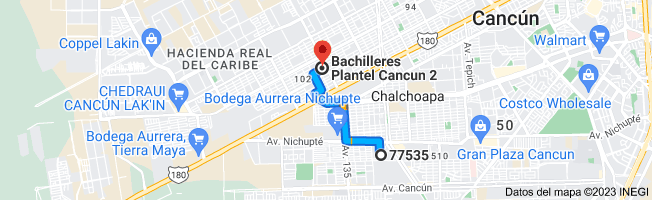

.jpeg)
Bachilleres Plantel Cancun 2, Av. Francisco I. Madero 30, 77538 Cancún, Q.R.
debes tener un número mínimo de 21 aciertos, y un máximo de 86.
Nuestro Modelo Educativo se ha enriquecido con la incorporación de las tecnologías de la información y comunicación que diversifican y optimizan la calidad de los servicios que ofrecemos. El Bachillerato Modular del Colegio de Bachilleres de Quintana Roo es una opción del Nivel Medio Superior mixta de estudios en la modalidad no escolarizada, flexible y económica. El Programa de Estudios está integrado por 22 módulos, que abarcan las diversas áreas del conocimiento y se estudia durante 2 años, los días sábados con la participación y garantía de la mediación docente.
Sistema Abierto para Estudios de Bachillerato.
Es posible combinar los estudios con otras actividades, se ajusta a tu tiempo y necesidades.
Asesorías Académicas para Alumnos del COBAQROO.
No importa tu edad.
El certificado tiene validez oficial.
Como alumno de nuestra institución cuenta con los servicios de Biblioteca e Internet.